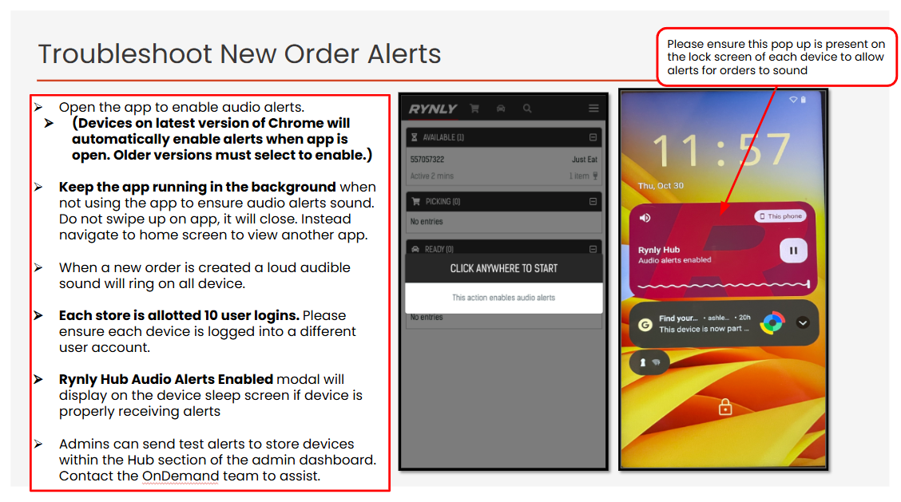
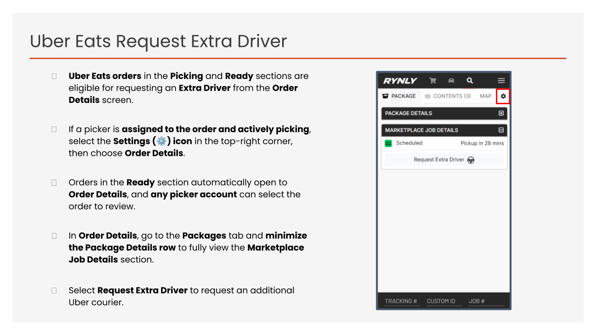

Help Centre
Select a guide:
FAQ:
1. How to identify an order?
The image below shows how to identify what type of order has been placed by a customer from the Rynly picking app home page. It is important to note which on demand channel (e.g Just Eat/Uber Eats) an order has come from as channel has its own compatibities with substitutes etc.

2. How to keep alerts ringing for new orders? ⌄
Please follow the troubleshooting steps to ensure alerts are ringing on devices. - Volume: Checked the volume on the handset and in the app, all set to max volume - Keep the App Active: The Rynly app must remain open or running in the background at all times. - Do Not Force Close: Users should not swipe up on the app, as this fully closes the application and prevents notifications from arriving. - Notification modal: If a device is correctly configured to receive alerts, the "Rynly Hub Alerts Enabled" modal will be visible on the sleep screen and persistantly stay on this screen (please see the image below):

4. How to request an extra driver for large orders? ⌄
Requesting an extra driver works differently for each channel. For Just Eat orders, please follow the directions below

For Uber Eats orders, please follow the directions below

For Chop Chop orders, please follow the directions below

5. How to clear old hanging/stuck orders? ⌄
Add answer text, image, or both here.
6. How to contact support? ⌄
Just Eat support: 0208 736 2000 Uber Eats support: 0808 178 5518 Chop Chop support: Rynly support: 0808 189 5095